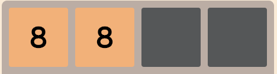
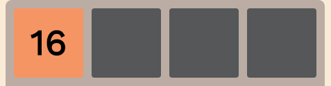
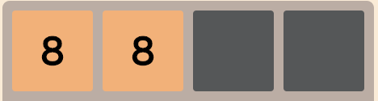
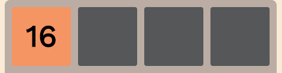
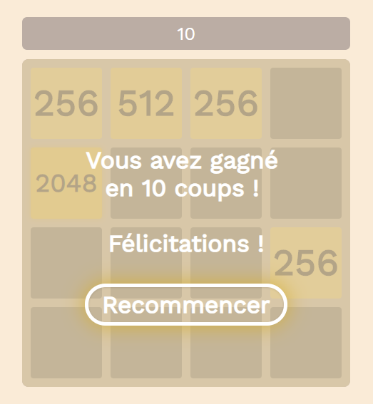

La présentation du jeu est largement inspirée du jeu officiel 2048 de Gabriele Cirulli notamment pour les couleurs utilisées.
J'ai fait le choix d'afficher la grille de jeu dans un élement table avec une largeur/hauteur de cases fixée à 100px.
Le pattern qui définit le nombre de lignes/colonnes de table est défini en Javascript (Game.js) en fonction de la taille de grille fourni en paramètres lors de l'instanciation de Game.
La valeur des tuiles est représentée au travers des classes auxquelles elles sont associées pour facilement adapter l'affichage des tuiles en CSS. Toutes les tuiles sont de classe CSS tile. Si elles n'appartiennent à aucune autre classe CSS, elles sont considérées comme vides.
Auquel cas, elles sont aussi de classes CSS tile-X (avec X = la valeur de la tuile).
De plus, la vue a été séparée du modèle : le script Javascript (Game.js) utilise une représentation interne sous forme de tableau bi-dimensionnel (contenant des objets Tile) pour calculer et stocker les données liées aux tuiles.
Un objet Tile possède notamment un attribut merged qui définit si celui ci a récemment été créée à la suite d'une fusion entre deux autres Tile.

Cela permet ainsi d'éviter d'agréger toutes les tuiles de valeur similaire d'un seul coup et de restreindre la fusion de tuiles (au cours d'un mouvement) aux tuiles qui n'ont pas encore été fusionnées.
Par exemple, un mouvement vers la gauche de ![[4][4][4][4]](img/4tiles.png) doit donner  et non .
doit donner  et non .
Lorsque les calculs sont terminées, on fait appel à updateView() pour mettre à jour la vue (i.e. #game-container)
Lorsqu'un statut de terminaison de jeu est détecté, un message d'information transparent vient s'apposer sur la grille de jeu afin d'informer le joueur de son score et lui proposer de recommencer une partie. Le déplacement des tuiles est également désactivé.
Cette boîte de message (#message-wrapper) est présente dans le fichier HTML mais reste cachée jusqu'à ce que le script Javascript la fasse apparaître.
Lorsque le joueur réussit à former une tuile 2048 :
Lorsque le joueur ne peut plus déplacer de tuiles avant d'atteindre une tuile 2048 :

Pour finir, ce choix de représentation de l'information en interne (grâce à un tableau 2D) permet d'éviter aux joueurs de "tricher" en modifiant directement le code HTML (et donc la valeur des tuiles) puisque cela aurait été rendu possible dans le cas où la représentation des données liées aux tuiles étaient stockées et lues directement dans le DOM.
{kind=link}
{kind=link}
{kind=link}